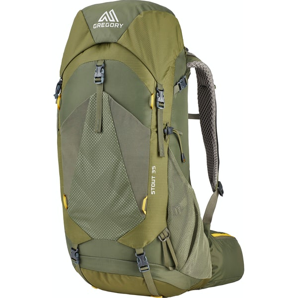
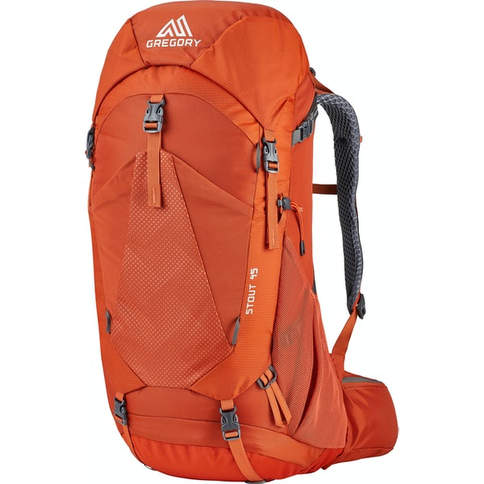

Before we get into which bag would be good for which emergancy. Lets talk about what options you may want in a bag. We believe your going to want bottom commpression straps adjudtible shoulder harness for thoes long walks your going to take. These make the weight of the bag distribute eveninly on your body and not bare so much of it on your shoulders.
With an earthquake or tornado comes a lot of rubble and a lot of uncertainty. You may not have a house with heat. All your food could be gone and who knows what else. In
the event an earthquake happens we suggest this bag.

This is Gregory Stout 35 Backpack from MEC. It is a 35L bag.
With a flood or a tsunami usually comes a lot of water. In this case your going to want a little bit bigger of a bag to hold a few more articles of clothing.

This is a 52L bag. With the extra space there is lots of room to keep things dry. Here is a list of items that you would be a good idea to pack in case of this emergency.
When it comes to fires you will need to have this bag in an easy and accesible place. They can happen around the holidays or in the summer months when the heat is dry and there hasnt been much rain.

This is a 45L bag.

Hurricanes are not fun. They come with a lot of wind and water. Like the flood/tsunami bag. You may need items to make a shelter if it takes your home.

This is a 38L bag.
During winter months it might be good to have a few things extra packed in your bag. The temperatures get a lot lower. Here are some times that you could pick up to help with the cold.